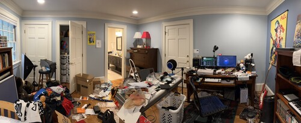

my room
i am in my room and i am younger than i have ever been
my room is where i feel the youngest. it was built and rebuilt and torn down and further rebuilt by hands that
were once mine. i am him again when i am back
in my room
- i am small
- i don't know anything
- i don't care about anything
- i'm safe
- safe enough to run from the world
- safe enough to ignore my emails
- safe from everybody but my
mother. i don't have a problem with my mother but
- every night before going to bed she knocks on my door. she has nothing in particular to say but
she knows she needs to say something
- who am i talking to on the phone? i don't want her to know i'm still talking to that girl
she doesn't like
- how are the emails? i'm ashamed of the fact i can't answer emails when i'm living in her
house. she'll take it personally
- safe from oddhorse
- i can sleep in my little twin bed
- i can sit at my desk and use my computer and make it do whatever i want it to do
- i can make music if i get over my fear of people perceiving me when i'm singing or making any noise
- i can ignore all my friends' text messages
in my room i am safe
in new york i am a different person
- i am oddhorse
- i have an inbox of zero
- everybody knows me and i don't know them
- i am a magical fairy who loves talking to everyone in the world
- i'm safe
- safe from judgement
- safe from quiet moments
- safe from my own thoughts
- safe from everybody but my
mother
- my mom got mad at me recently because i wasn't answering her messages. every two hours if i don't
respond to one she will send many question marks just to make sure i see it. i have no fear in the
world except for those question marks
- they're for questions like:
- have you made that doctor's appointment? no, i haven't, but fear of the task i'm getting
from you is worse than my forgetting it
- did you see the article i sent? it was probably a fine article but i don't know why i was
too afraid to open your text at all
- i can sleep on my little twin bed
- i can fear my roommates hearing me through the massive ventilation gaps in my room walls
- i am the cutthroat hustler this city requires of me
in new york i am successful
my history and my past are all around me in my room. i could tear it all down and throw it all away, but who would
i be if my past no longer existed? maybe i need to keep it somewhere far away. so i can be somebody it's not,
rather than nobody at all.
maybe at home i am who i really am. if so, i don't like who i am at all. maybe, for my own good, i should never
go home
again.
...or we could go back home